Interactions recorded by online platforms: Wikipedia talk pages and adminship votes, question-and-answer sites, a forum, trust ratings between Bitcoin traders, actions in a course, and GitHub activity. They are large (up to millions of events), with heavy-tailed activity and strong concentration on a few actors, and several are bipartite (users acting on items).
The data catalogue lists every dataset with its licence. Figures and numbers on this page are aggregates computed from the files as published; each section links the source and the code that reads it.
| dataset | events | actors | licence | amorem |
|---|---|---|---|---|
| SNAP: Wikipedia talk-page messages | 6,100,538 | 1,094,018 | none stated | obtain from source |
| SNAP: Wikipedia requests for adminship votes | 188,816 | 11,128 | none stated | obtain from source |
| SNAP: MathOverflow interactions | 390,441 | 24,759 | none stated | obtain from source |
| SNAP: Ask Ubuntu interactions | 726,661 | 157,222 | none stated | obtain from source |
| SNAP: Super User interactions | 1,108,739 | 192,409 | none stated | obtain from source |
| Network Repository: Facebook-like forum | 33,686 | 899 | CC BY-SA | share-alike |
| SNAP: Bitcoin OTC trust ratings | 35,592 | 5,881 | none stated | obtain from source |
| SNAP: Bitcoin Alpha trust ratings | 24,186 | 3,783 | none stated | obtain from source |
| SNAP: MOOC user actions | 411,749 | 7,144 | none stated | obtain from source |
| GH Archive: one hour of public GitHub events | 11,351 | 11,431 | none stated | obtain from source |
SNAP: Wikipedia talk-page messages
Source: https://snap.stanford.edu/data/ · Licence: none stated · Status in amorem: no licence stated: not redistributed; obtain from the source.
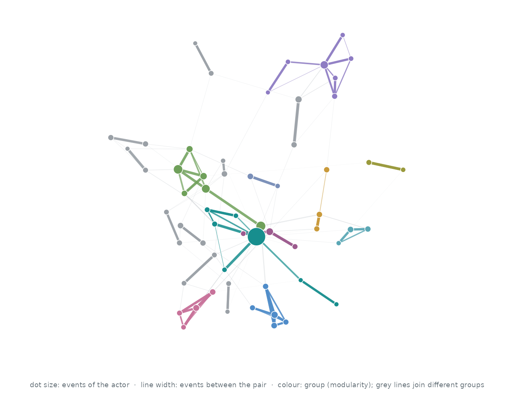
Who interacts with whom. The 60 actors of the busiest pairs, out of 1,094,018; events between two of them are 0.6% of all events. Each actor’s three strongest ties are drawn (115 of 255 pairs that ever interacted): wider, darker lines carry more events, larger dots are more active actors, and colours are groups found by modularity (Louvain).
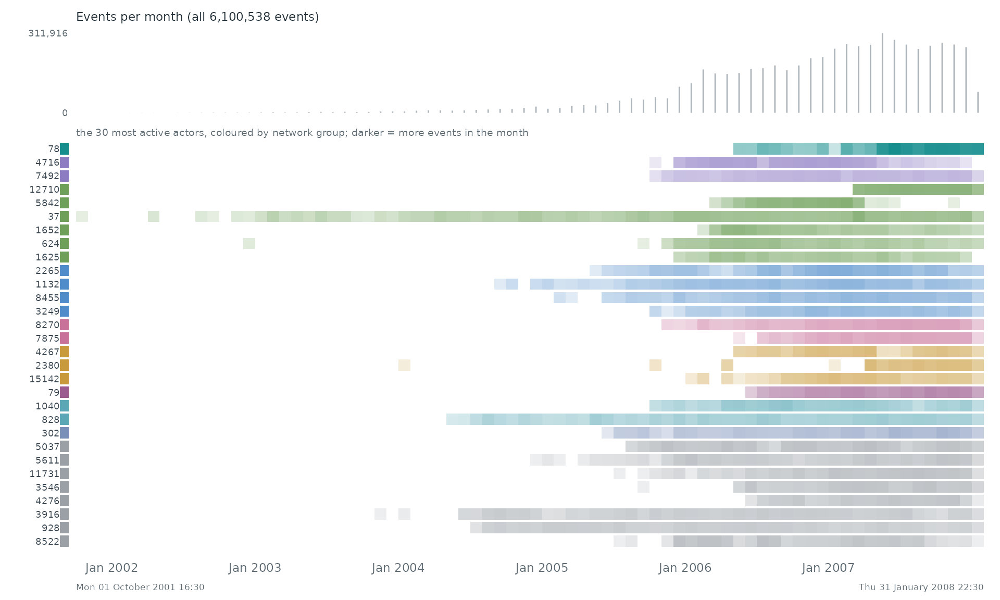
When. Each row is one of the 30 most active actors of the network, coloured by its group there; a cell is darker the more events (with anyone) the actor took part in during that stretch of time. The grey bars on top count all 6,100,538 events.
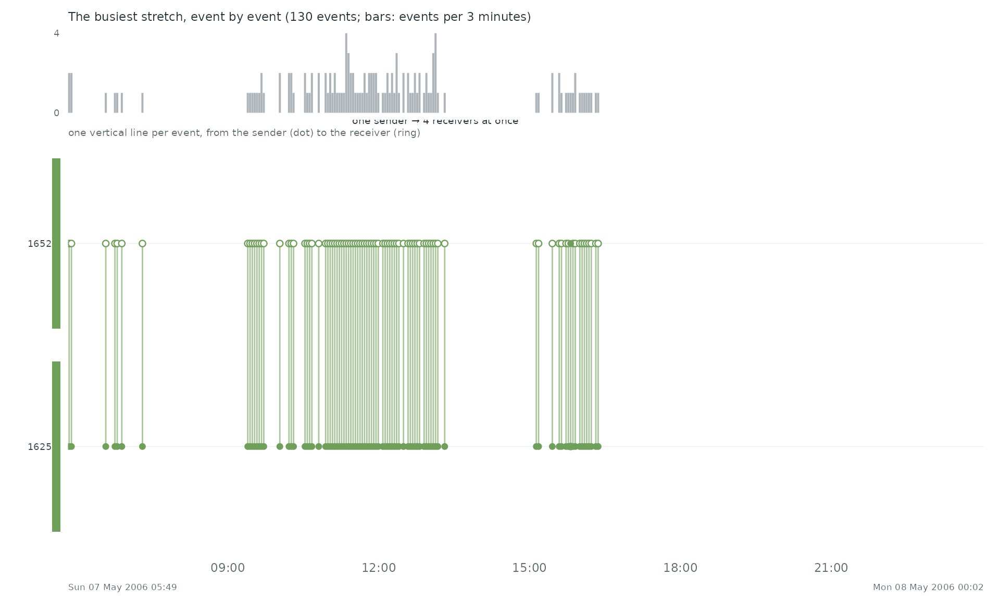
Event by event. The busiest stretch of the record, Sun 07 May 2006 05:49 to Mon 08 May 2006 00:02, event by event: each vertical line is one event between two of the actors above, from the sender (dot) to the receiver (ring).
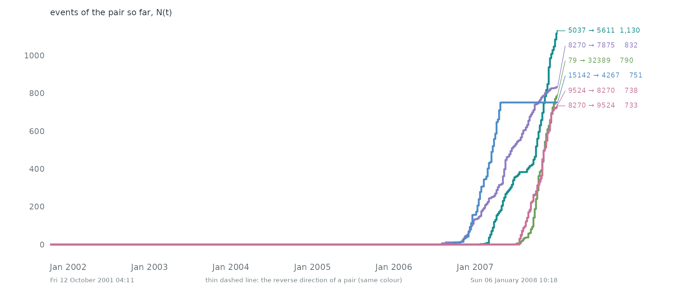
Pairs as counting processes. The counting process N(t) of the 6 busiest pairs: the number of events of the pair up to time t. Together they make 0.1% of all events. Steep stretches are bursts and flat ones silences. 2 of these pairs are the reverse of another, so replies run alongside the messages they answer.
Statistical profile.
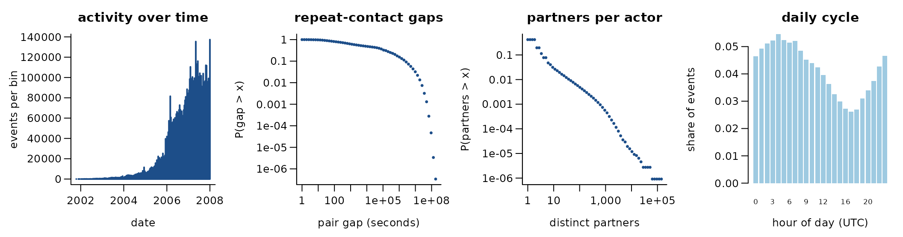
6,100,538 directed events among 1,094,018 actors over 2,277.3 days (3,130,742 distinct ordered pairs). 48.7% of events repeat an earlier ordered pair; if every event chose a pair at random the share would be 0.0%. 29.4% of events answer an earlier event in the opposite direction. The burstiness coefficient of the gaps between successive events of the same pair is 0.58 (0 for a Poisson process, positive when events cluster in bursts); the most active tenth of the actors take part in 85.5% of events (Gini 0.87). English Wikipedia user talk pages
A conditional logit on the first 4,000 events (one sampled control per event) gives:
| term | estimate | s.e. |
|---|---|---|
| log(1 + sender’s past events) | 1.61 | 0.10 |
| log(1 + receiver’s past events received) | 1.54 | 0.12 |
| log(1 + past events receiver -> sender) | 1.98 | 0.62 |
Get the data
download.file("https://snap.stanford.edu/data/wiki-talk-temporal.html", "wiki-talk-temporal.html", mode = "wb")
download.file("https://snap.stanford.edu/data/wiki-talk-temporal.txt.gz", "wiki-talk-temporal.txt.gz", mode = "wb")A reader that turns these files into a
(sender, receiver, time) table is
readers[["snap-wiki-talk-temporal"]] in data-raw/catalogue/readers.R.
SNAP: Wikipedia requests for adminship votes
Source: https://snap.stanford.edu/data/ · Licence: none stated · Status in amorem: no licence stated: not redistributed; obtain from the source.
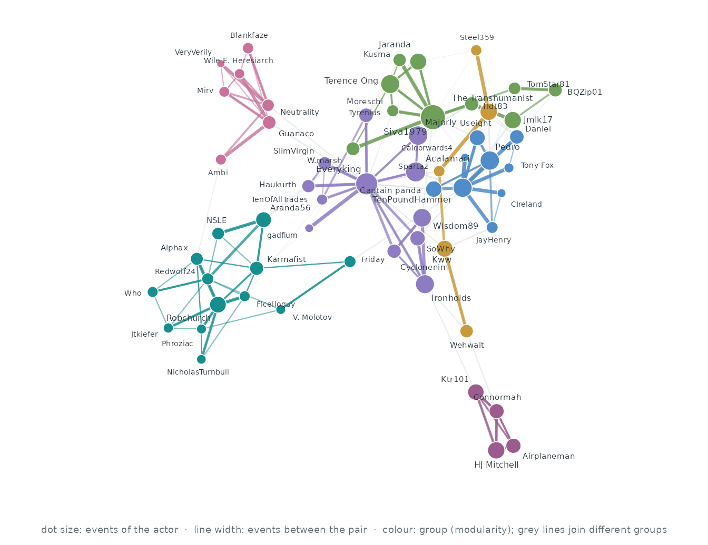
Who interacts with whom. The 60 actors of the busiest pairs, out of 11,128; events between two of them are 0.4% of all events. Each actor’s three strongest ties are drawn (132 of 383 pairs that ever interacted): wider, darker lines carry more events, larger dots are more active actors, and colours are groups found by modularity (Louvain).
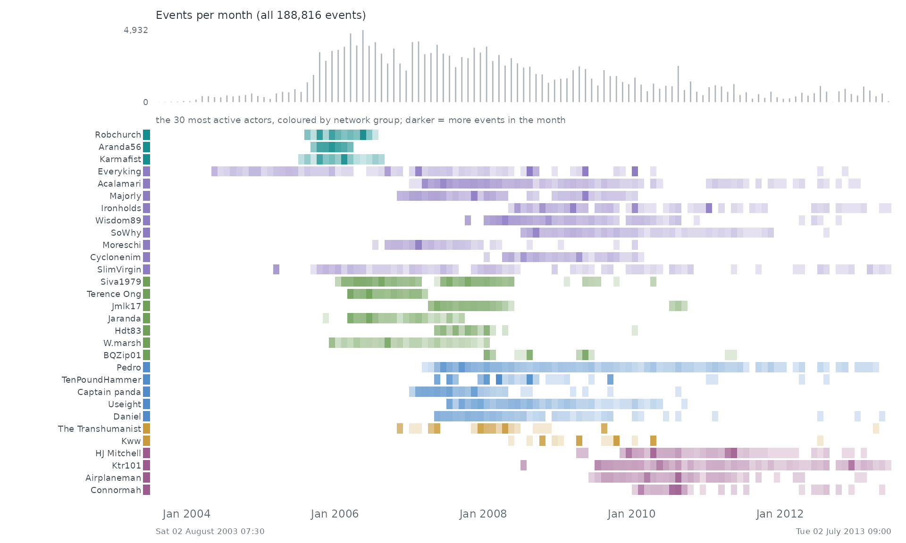
When. Each row is one of the 30 most active actors of the network, coloured by its group there; a cell is darker the more events (with anyone) the actor took part in during that stretch of time. The grey bars on top count all 188,816 events.
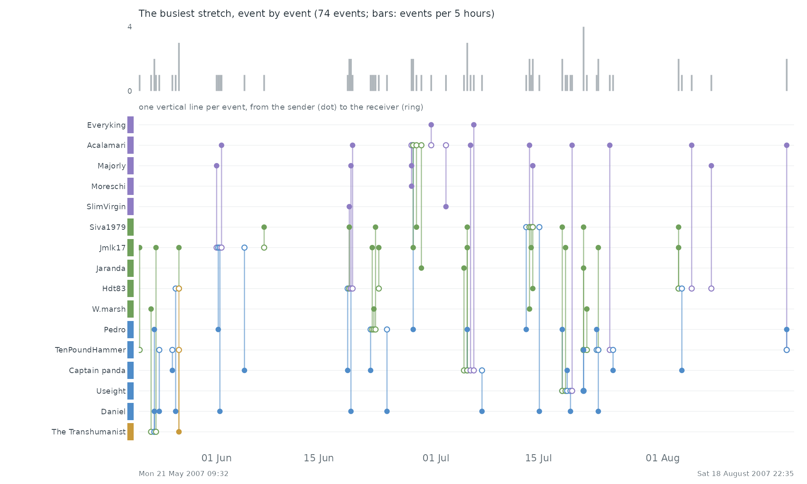
Event by event. The busiest stretch of the record, Mon 21 May 2007 09:32 to Sat 18 August 2007 22:35, event by event: each vertical line is one event between two of the actors above, from the sender (dot) to the receiver (ring).
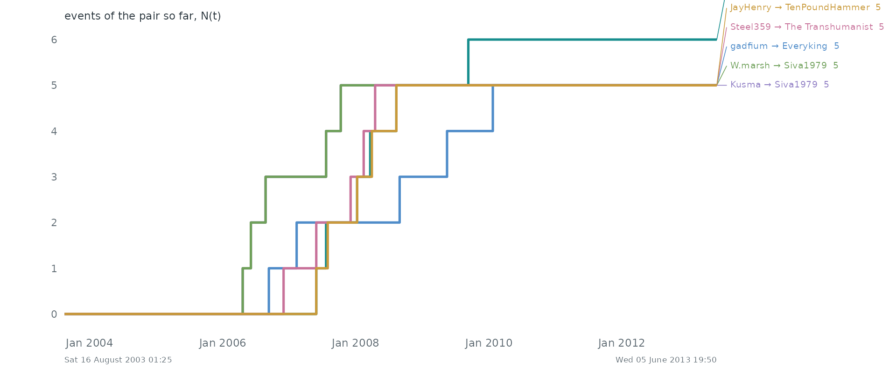
Pairs as counting processes. The counting process N(t) of the 6 busiest pairs: the number of events of the pair up to time t. Together they make 0.0% of all events. Steep stretches are bursts and flat ones silences.
Statistical profile.
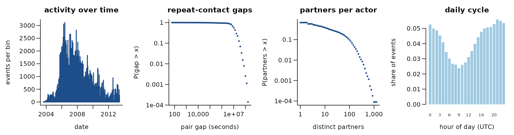
188,816 directed events among 11,128 actors over 3,581.8 days (180,781 distinct ordered pairs). 4.3% of events repeat an earlier ordered pair; if every event chose a pair at random the share would be 0.1%. 3.9% of events answer an earlier event in the opposite direction. The burstiness coefficient of the gaps between successive events of the same pair is -0.04 (0 for a Poisson process, positive when events cluster in bursts); the most active tenth of the actors take part in 61.5% of events (Gini 0.77). votes on requests for adminship; undated votes dropped
A conditional logit on the first 4,000 events (one sampled control per event) gives:
| term | estimate | s.e. |
|---|---|---|
| log(1 + sender’s past events) | 1.19 | 0.05 |
| log(1 + receiver’s past events received) | 1.19 | 0.05 |
| log(1 + past events receiver -> sender) | 1.18 | 0.56 |
Get the data
download.file("https://snap.stanford.edu/data/wiki-RfA.html", "wiki-RfA.html", mode = "wb")
download.file("https://snap.stanford.edu/data/wiki-RfA.txt.gz", "wiki-RfA.txt.gz", mode = "wb")A reader that turns these files into a
(sender, receiver, time) table is
readers[["snap-wiki-rfa"]] in data-raw/catalogue/readers.R.
SNAP: MathOverflow interactions
Source: https://snap.stanford.edu/data/ · Licence: none stated · Status in amorem: no licence stated: not redistributed; obtain from the source.
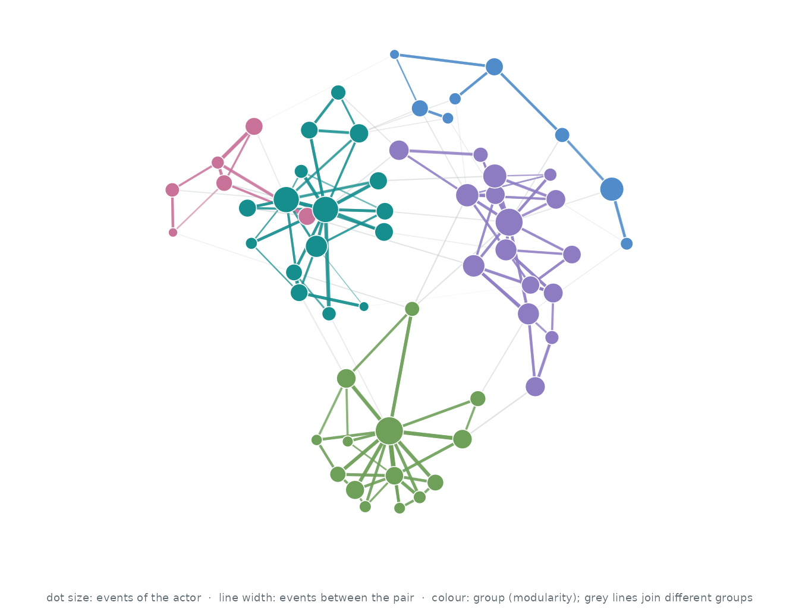
Who interacts with whom. The 60 actors of the busiest pairs, out of 24,759; events between two of them are 3.6% of all events. Each actor’s three strongest ties are drawn (137 of 977 pairs that ever interacted): wider, darker lines carry more events, larger dots are more active actors, and colours are groups found by modularity (Louvain).
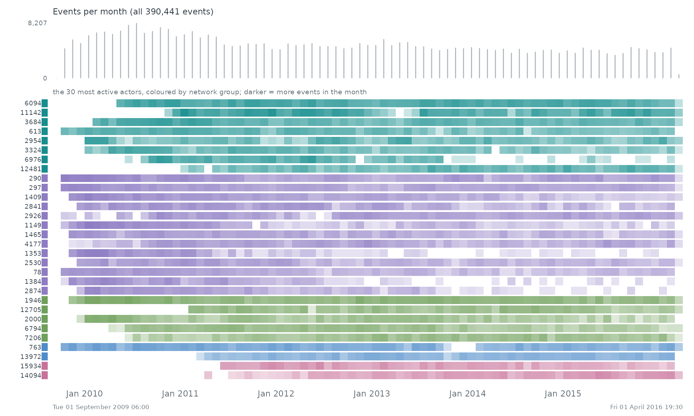
When. Each row is one of the 30 most active actors of the network, coloured by its group there; a cell is darker the more events (with anyone) the actor took part in during that stretch of time. The grey bars on top count all 390,441 events.
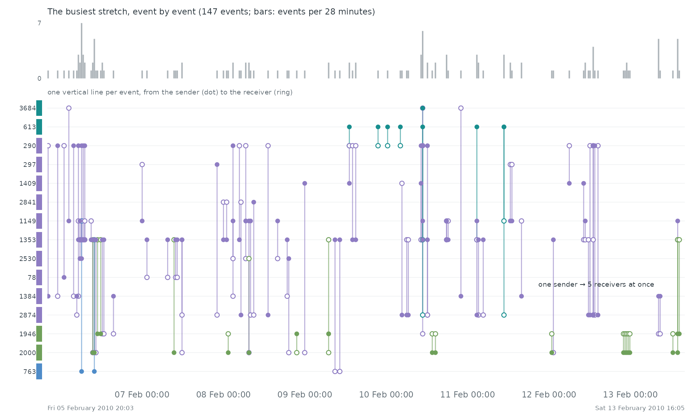
Event by event. The busiest stretch of the record, Fri 05 February 2010 20:03 to Sat 13 February 2010 16:05, event by event: each vertical line is one event between two of the actors above, from the sender (dot) to the receiver (ring).
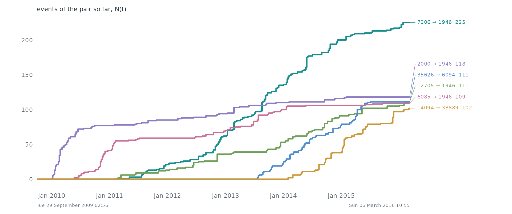
Pairs as counting processes. The counting process N(t) of the 6 busiest pairs: the number of events of the pair up to time t. Together they make 0.2% of all events. Steep stretches are bursts and flat ones silences.
Statistical profile.
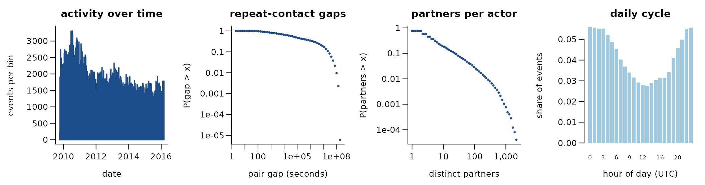
390,441 directed events among 24,759 actors over 2,350.3 days (227,991 distinct ordered pairs). 41.6% of events repeat an earlier ordered pair; if every event chose a pair at random the share would be 0.0%. 31.5% of events answer an earlier event in the opposite direction. The burstiness coefficient of the gaps between successive events of the same pair is 0.44 (0 for a Poisson process, positive when events cluster in bursts); the most active tenth of the actors take part in 81.6% of events (Gini 0.85). answers and comments, all interaction types
A conditional logit on the first 4,000 events (one sampled control per event) gives:
| term | estimate | s.e. |
|---|---|---|
| log(1 + sender’s past events) | 1.04 | 0.05 |
| log(1 + receiver’s past events received) | 1.11 | 0.05 |
| log(1 + past events receiver -> sender) | 4.26 | 0.42 |
Get the data
download.file("https://snap.stanford.edu/data/sx-mathoverflow-a2q.txt.gz", "sx-mathoverflow-a2q.txt.gz", mode = "wb")
download.file("https://snap.stanford.edu/data/sx-mathoverflow-c2a.txt.gz", "sx-mathoverflow-c2a.txt.gz", mode = "wb")
download.file("https://snap.stanford.edu/data/sx-mathoverflow-c2q.txt.gz", "sx-mathoverflow-c2q.txt.gz", mode = "wb")
download.file("https://snap.stanford.edu/data/sx-mathoverflow.html", "sx-mathoverflow.html", mode = "wb")
download.file("https://snap.stanford.edu/data/sx-mathoverflow.txt.gz", "sx-mathoverflow.txt.gz", mode = "wb")A reader that turns these files into a
(sender, receiver, time) table is
readers[["snap-sx-mathoverflow"]] in data-raw/catalogue/readers.R.
SNAP: Ask Ubuntu interactions
Source: https://snap.stanford.edu/data/ · Licence: none stated · Status in amorem: no licence stated: not redistributed; obtain from the source.
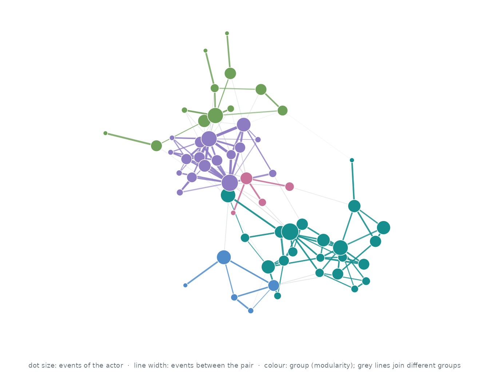
Who interacts with whom. The 60 actors of the busiest pairs, out of 157,222; events between two of them are 1.2% of all events. Each actor’s three strongest ties are drawn (135 of 779 pairs that ever interacted): wider, darker lines carry more events, larger dots are more active actors, and colours are groups found by modularity (Louvain).
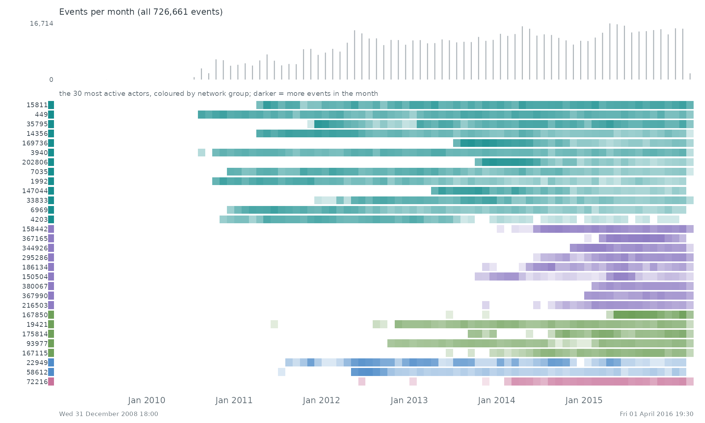
When. Each row is one of the 30 most active actors of the network, coloured by its group there; a cell is darker the more events (with anyone) the actor took part in during that stretch of time. The grey bars on top count all 726,661 events.
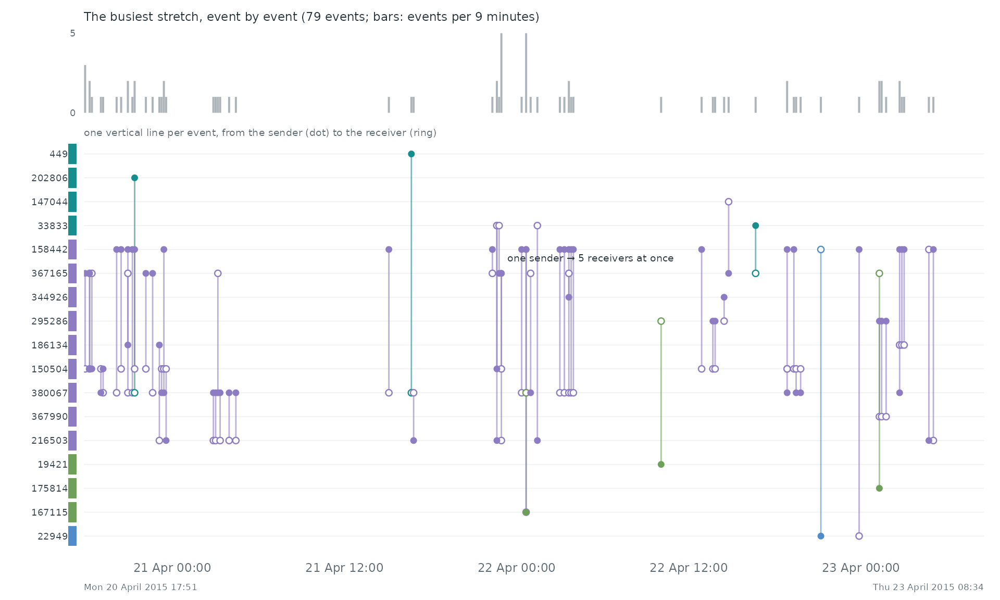
Event by event. The busiest stretch of the record, Mon 20 April 2015 17:51 to Thu 23 April 2015 08:34, event by event: each vertical line is one event between two of the actors above, from the sender (dot) to the receiver (ring).
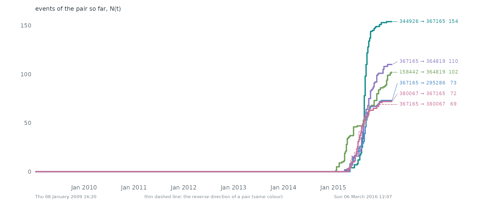
Pairs as counting processes. The counting process N(t) of the 6 busiest pairs: the number of events of the pair up to time t. Together they make 0.1% of all events. Steep stretches are bursts and flat ones silences. 2 of these pairs are the reverse of another, so replies run alongside the messages they answer.
Statistical profile.
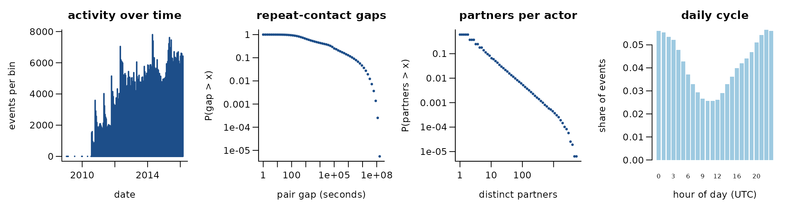
726,661 directed events among 157,222 actors over 2,613.8 days (544,621 distinct ordered pairs). 25.1% of events repeat an earlier ordered pair; if every event chose a pair at random the share would be 0.0%. 24.6% of events answer an earlier event in the opposite direction. The burstiness coefficient of the gaps between successive events of the same pair is 0.64 (0 for a Poisson process, positive when events cluster in bursts); the most active tenth of the actors take part in 70.6% of events (Gini 0.76).
A conditional logit on the first 4,000 events (one sampled control per event) gives:
| term | estimate | s.e. |
|---|---|---|
| log(1 + sender’s past events) | 1.12 | 0.05 |
| log(1 + receiver’s past events received) | 1.01 | 0.05 |
| log(1 + past events receiver -> sender) | 5.69 | 0.48 |
Get the data
download.file("https://snap.stanford.edu/data/sx-askubuntu.html", "sx-askubuntu.html", mode = "wb")
download.file("https://snap.stanford.edu/data/sx-askubuntu.txt.gz", "sx-askubuntu.txt.gz", mode = "wb")A reader that turns these files into a
(sender, receiver, time) table is
readers[["snap-sx-askubuntu"]] in data-raw/catalogue/readers.R.
SNAP: Super User interactions
Source: https://snap.stanford.edu/data/ · Licence: none stated · Status in amorem: no licence stated: not redistributed; obtain from the source.
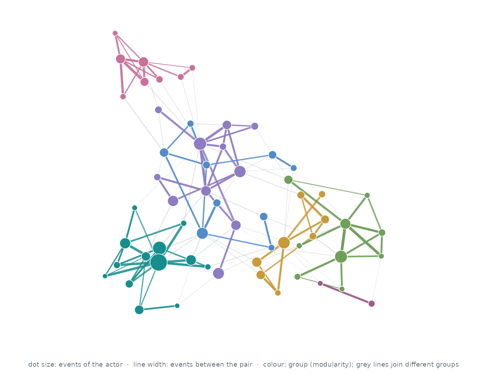
Who interacts with whom. The 60 actors of the busiest pairs, out of 192,409; events between two of them are 0.9% of all events. Each actor’s three strongest ties are drawn (135 of 971 pairs that ever interacted): wider, darker lines carry more events, larger dots are more active actors, and colours are groups found by modularity (Louvain).
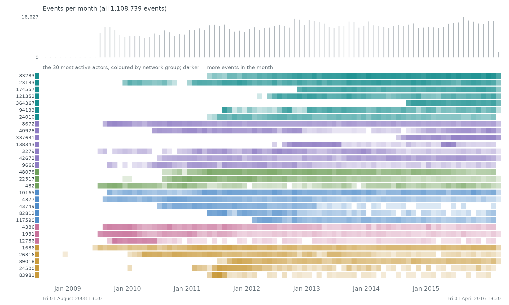
When. Each row is one of the 30 most active actors of the network, coloured by its group there; a cell is darker the more events (with anyone) the actor took part in during that stretch of time. The grey bars on top count all 1,108,739 events.
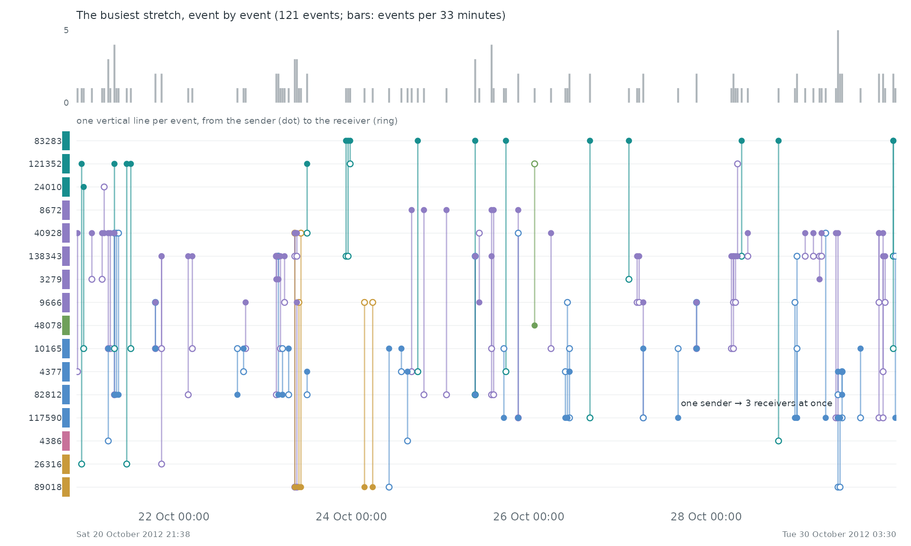
Event by event. The busiest stretch of the record, Sat 20 October 2012 21:38 to Tue 30 October 2012 03:30, event by event: each vertical line is one event between two of the actors above, from the sender (dot) to the receiver (ring).
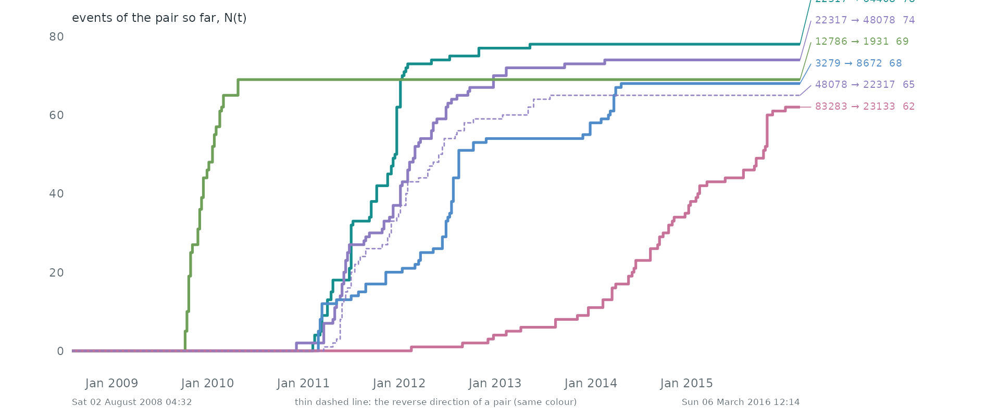
Pairs as counting processes. The counting process N(t) of the 6 busiest pairs: the number of events of the pair up to time t. Together they make 0.0% of all events. Steep stretches are bursts and flat ones silences. 2 of these pairs are the reverse of another, so replies run alongside the messages they answer.
Statistical profile.
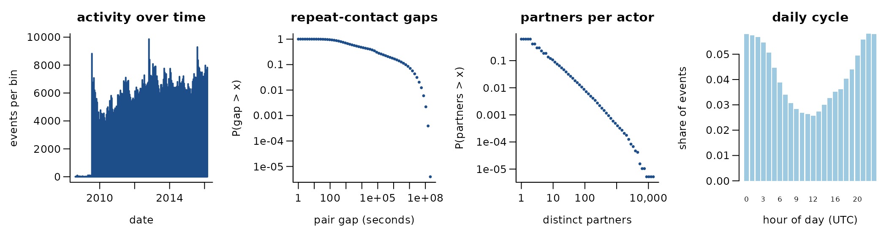
1,108,739 directed events among 192,409 actors over 2,773.3 days (854,377 distinct ordered pairs). 22.9% of events repeat an earlier ordered pair; if every event chose a pair at random the share would be 0.0%. 22.8% of events answer an earlier event in the opposite direction. The burstiness coefficient of the gaps between successive events of the same pair is 0.59 (0 for a Poisson process, positive when events cluster in bursts); the most active tenth of the actors take part in 73.0% of events (Gini 0.78).
A conditional logit on the first 4,000 events (one sampled control per event) gives:
| term | estimate | s.e. |
|---|---|---|
| log(1 + sender’s past events) | 1.14 | 0.06 |
| log(1 + receiver’s past events received) | 1.36 | 0.05 |
| log(1 + past events receiver -> sender) | 8.40 | 0.78 |
Get the data
download.file("https://snap.stanford.edu/data/sx-superuser.html", "sx-superuser.html", mode = "wb")
download.file("https://snap.stanford.edu/data/sx-superuser.txt.gz", "sx-superuser.txt.gz", mode = "wb")A reader that turns these files into a
(sender, receiver, time) table is
readers[["snap-sx-superuser"]] in data-raw/catalogue/readers.R.
Network Repository: Facebook-like forum
Source: https://networkrepository.com/policy.php · Licence: CC BY-SA · Status in amorem: share-alike: redistributable only under the same licence.
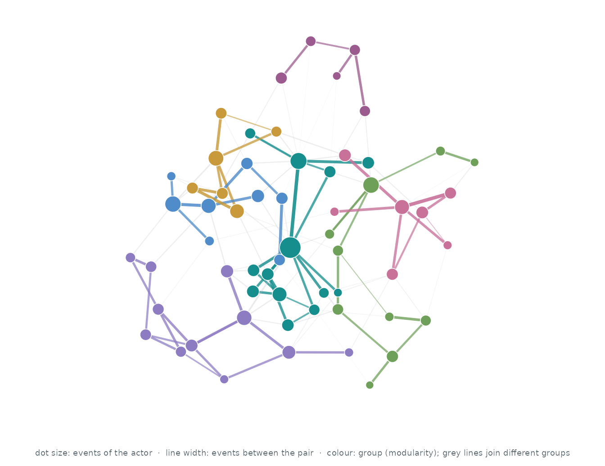
Who interacts with whom. The 60 actors of the busiest pairs, out of 899; events between two of them are 17.2% of all events. Each actor’s three strongest ties are drawn (121 of 268 pairs that ever interacted): wider, darker lines carry more events, larger dots are more active actors, and colours are groups found by modularity (Louvain).
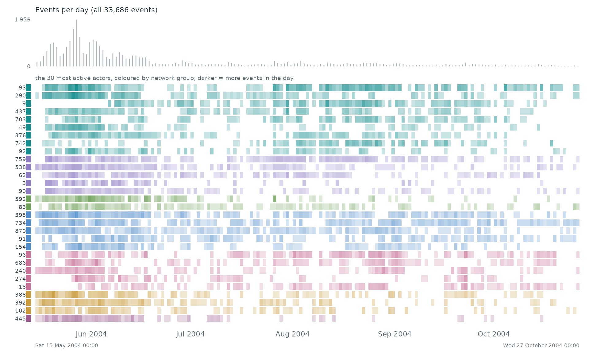
When. Each row is one of the 30 most active actors of the network, coloured by its group there; a cell is darker the more events (with anyone) the actor took part in during that stretch of time. The grey bars on top count all 33,686 events.
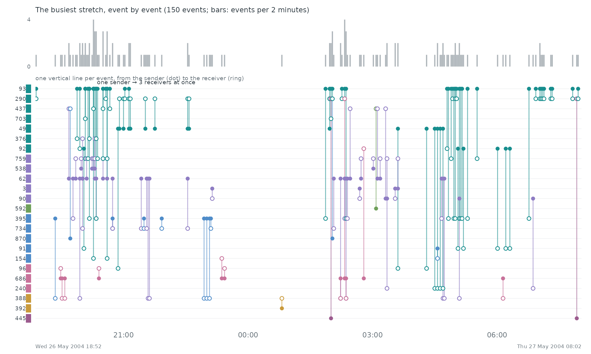
Event by event. The busiest stretch of the record, Wed 26 May 2004 18:52 to Thu 27 May 2004 08:02, event by event: each vertical line is one event between two of the actors above, from the sender (dot) to the receiver (ring).
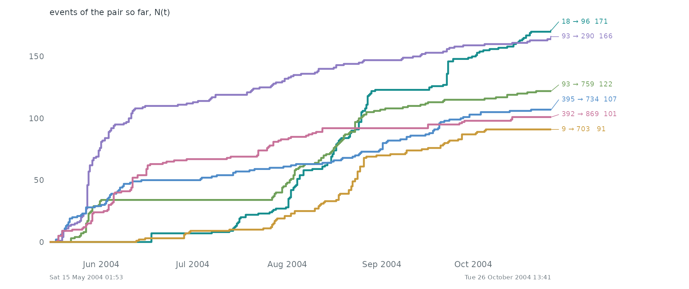
Pairs as counting processes. The counting process N(t) of the 6 busiest pairs: the number of events of the pair up to time t. Together they make 2.3% of all events. Steep stretches are bursts and flat ones silences.
Statistical profile.
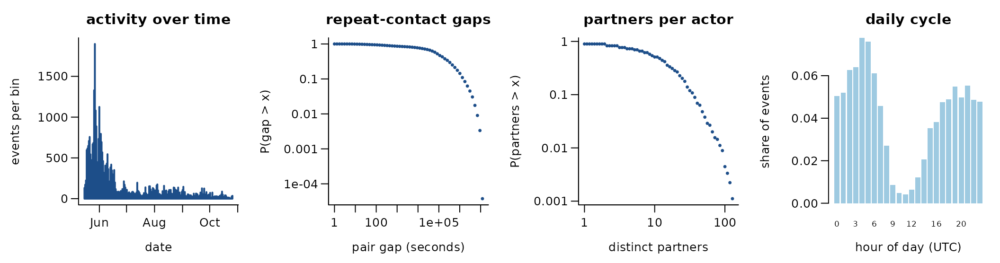
33,686 directed events among 899 actors over 164.5 days (7,079 distinct ordered pairs). 79.0% of events repeat an earlier ordered pair; if every event chose a pair at random the share would be 2.1%. 1.1% of events answer an earlier event in the opposite direction. The burstiness coefficient of the gaps between successive events of the same pair is 0.39 (0 for a Poisson process, positive when events cluster in bursts); the most active tenth of the actors take part in 48.8% of events (Gini 0.66). Facebook-like forum, 2004
A conditional logit on the first 4,000 events (one sampled control per event) gives:
| term | estimate | s.e. |
|---|---|---|
| log(1 + sender’s past events) | 0.93 | 0.04 |
| log(1 + receiver’s past events received) | 1.12 | 0.04 |
| log(1 + past events receiver -> sender) | -0.07 | 0.71 |
Get the data
download.file("https://nrvis.com/download/data/dynamic/fb-forum.zip", "fb-forum.zip", mode = "wb")A reader that turns these files into a
(sender, receiver, time) table is
readers[["nr-fb-forum"]] in data-raw/catalogue/readers.R.
SNAP: Bitcoin OTC trust ratings
Source: https://snap.stanford.edu/data/ · Licence: none stated · Status in amorem: no licence stated: not redistributed; obtain from the source.
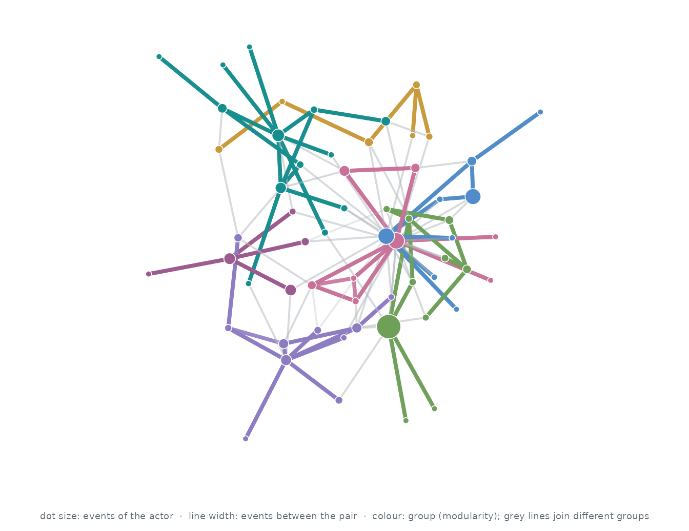
Who interacts with whom. The 60 actors of the busiest pairs, out of 5,881; events between two of them are 1.0% of all events. Each actor’s three strongest ties are drawn (112 of 189 pairs that ever interacted): wider, darker lines carry more events, larger dots are more active actors, and colours are groups found by modularity (Louvain).
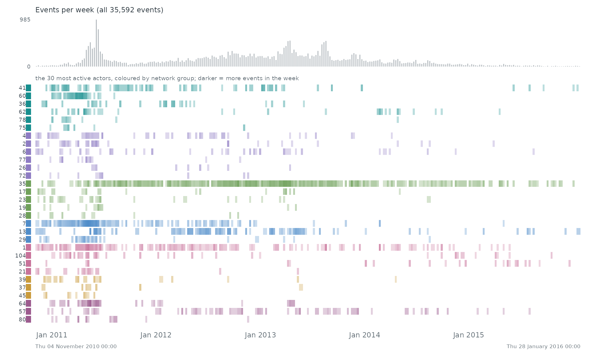
When. Each row is one of the 30 most active actors of the network, coloured by its group there; a cell is darker the more events (with anyone) the actor took part in during that stretch of time. The grey bars on top count all 35,592 events.
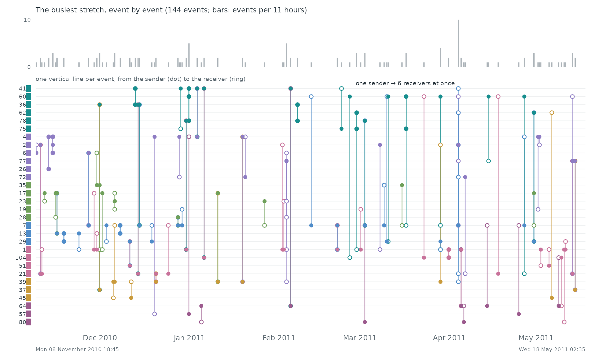
Event by event. The busiest stretch of the record, Mon 08 November 2010 18:45 to Wed 18 May 2011 02:35, event by event: each vertical line is one event between two of the actors above, from the sender (dot) to the receiver (ring).
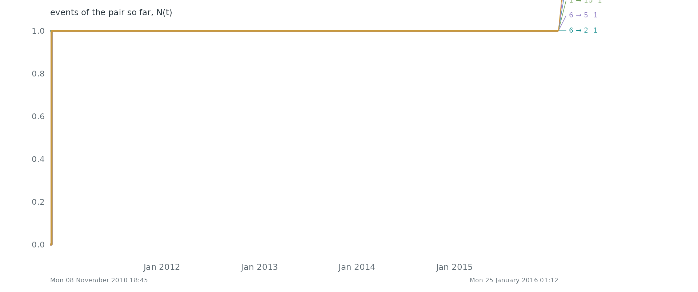
Pairs as counting processes. The counting process N(t) of the 6 busiest pairs: the number of events of the pair up to time t. Together they make 0.0% of all events. Steep stretches are bursts and flat ones silences.
Statistical profile.
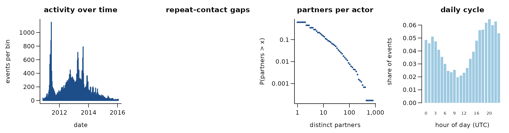
35,592 directed events among 5,881 actors over 1,903.3 days (35,592 distinct ordered pairs). 0.0% of events repeat an earlier ordered pair; if every event chose a pair at random the share would be 0.1%. 39.6% of events answer an earlier event in the opposite direction. The burstiness coefficient of the gaps between successive events of the same pair is NA (0 for a Poisson process, positive when events cluster in bursts); the most active tenth of the actors take part in 63.1% of events (Gini 0.72). trust ratings from -10 to +10
A conditional logit on the first 4,000 events (one sampled control per event) gives:
| term | estimate | s.e. |
|---|---|---|
| log(1 + sender’s past events) | 1.36 | 0.06 |
| log(1 + receiver’s past events received) | 0.51 | 0.05 |
| log(1 + past events receiver -> sender) | 9.93 | 0.76 |
Get the data
download.file("https://snap.stanford.edu/data/soc-sign-bitcoin-otc.html", "soc-sign-bitcoin-otc.html", mode = "wb")
download.file("https://snap.stanford.edu/data/soc-sign-bitcoinotc.csv.gz", "soc-sign-bitcoinotc.csv.gz", mode = "wb")A reader that turns these files into a
(sender, receiver, time) table is
readers[["snap-bitcoin-otc"]] in data-raw/catalogue/readers.R.
SNAP: Bitcoin Alpha trust ratings
Source: https://snap.stanford.edu/data/ · Licence: none stated · Status in amorem: no licence stated: not redistributed; obtain from the source.
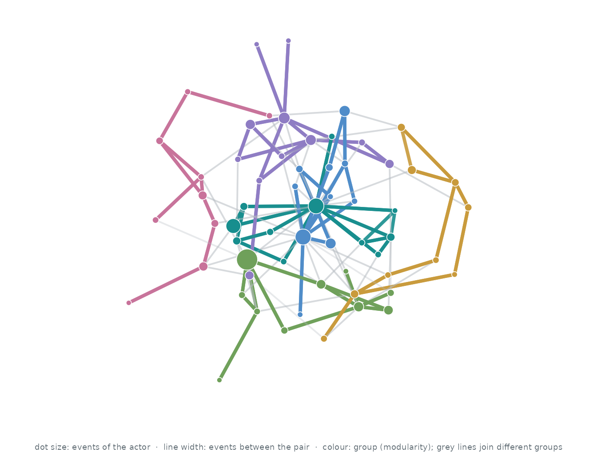
Who interacts with whom. The 60 actors of the busiest pairs, out of 3,783; events between two of them are 1.7% of all events. Each actor’s three strongest ties are drawn (123 of 230 pairs that ever interacted): wider, darker lines carry more events, larger dots are more active actors, and colours are groups found by modularity (Louvain).
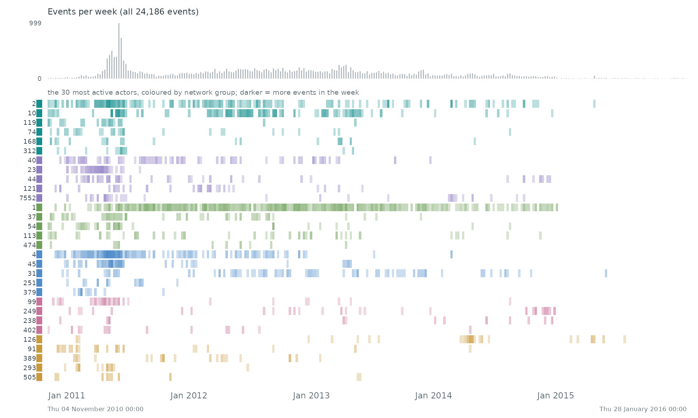
When. Each row is one of the 30 most active actors of the network, coloured by its group there; a cell is darker the more events (with anyone) the actor took part in during that stretch of time. The grey bars on top count all 24,186 events.
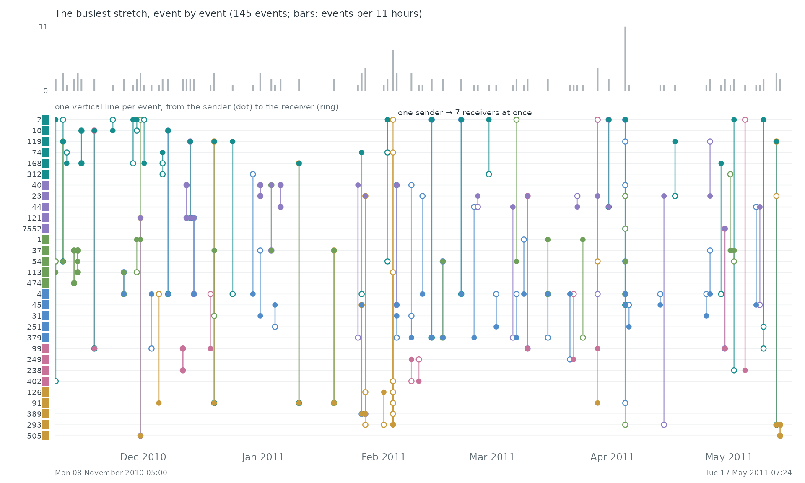
Event by event. The busiest stretch of the record, Mon 08 November 2010 05:00 to Tue 17 May 2011 07:24, event by event: each vertical line is one event between two of the actors above, from the sender (dot) to the receiver (ring).
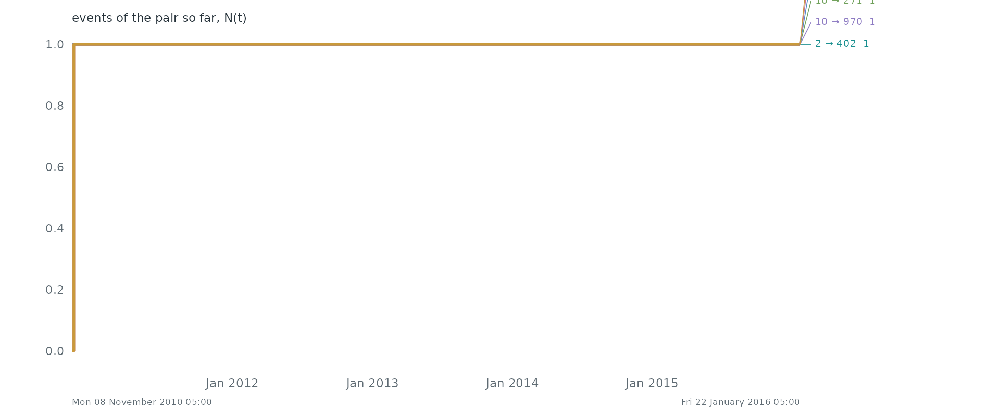
Pairs as counting processes. The counting process N(t) of the 6 busiest pairs: the number of events of the pair up to time t. Together they make 0.0% of all events. Steep stretches are bursts and flat ones silences.
Statistical profile.
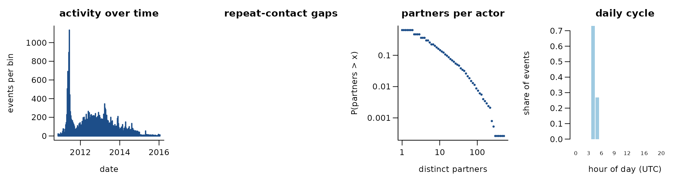
24,186 directed events among 3,783 actors over 1,901.0 days (24,186 distinct ordered pairs). 0.0% of events repeat an earlier ordered pair; if every event chose a pair at random the share would be 0.1%. 11.3% of events answer an earlier event in the opposite direction. The burstiness coefficient of the gaps between successive events of the same pair is NA (0 for a Poisson process, positive when events cluster in bursts); the most active tenth of the actors take part in 61.2% of events (Gini 0.70). 93.2% of events share their time stamp with an earlier one. trust ratings from -10 to +10
A conditional logit on the first 4,000 events (one sampled control per event) gives:
| term | estimate | s.e. |
|---|---|---|
| log(1 + sender’s past events) | 0.75 | 0.03 |
| log(1 + receiver’s past events received) | 0.70 | 0.03 |
| log(1 + past events receiver -> sender) | 3.05 | 0.43 |
Get the data
download.file("https://snap.stanford.edu/data/soc-sign-bitcoin-alpha.html", "soc-sign-bitcoin-alpha.html", mode = "wb")
download.file("https://snap.stanford.edu/data/soc-sign-bitcoinalpha.csv.gz", "soc-sign-bitcoinalpha.csv.gz", mode = "wb")A reader that turns these files into a
(sender, receiver, time) table is
readers[["snap-bitcoin-alpha"]] in data-raw/catalogue/readers.R.
SNAP: MOOC user actions
Source: https://snap.stanford.edu/data/ · Licence: none stated · Status in amorem: no licence stated: not redistributed; obtain from the source.
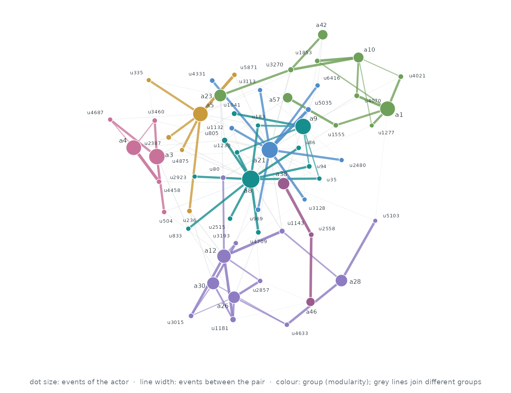
Who interacts with whom. The 60 actors of the busiest pairs, out of 7,144; events between two of them are 1.0% of all events. Each actor’s three strongest ties are drawn (138 of 608 pairs that ever interacted): wider, darker lines carry more events, larger dots are more active actors, and colours are groups found by modularity (Louvain).
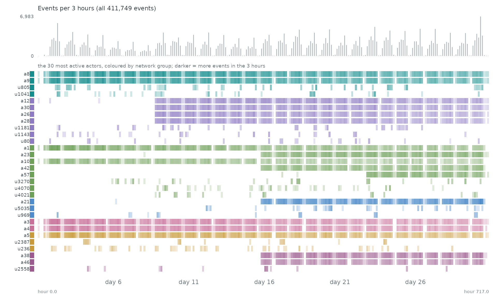
When. Each row is one of the 30 most active actors of the network, coloured by its group there; a cell is darker the more events (with anyone) the actor took part in during that stretch of time. The grey bars on top count all 411,749 events.
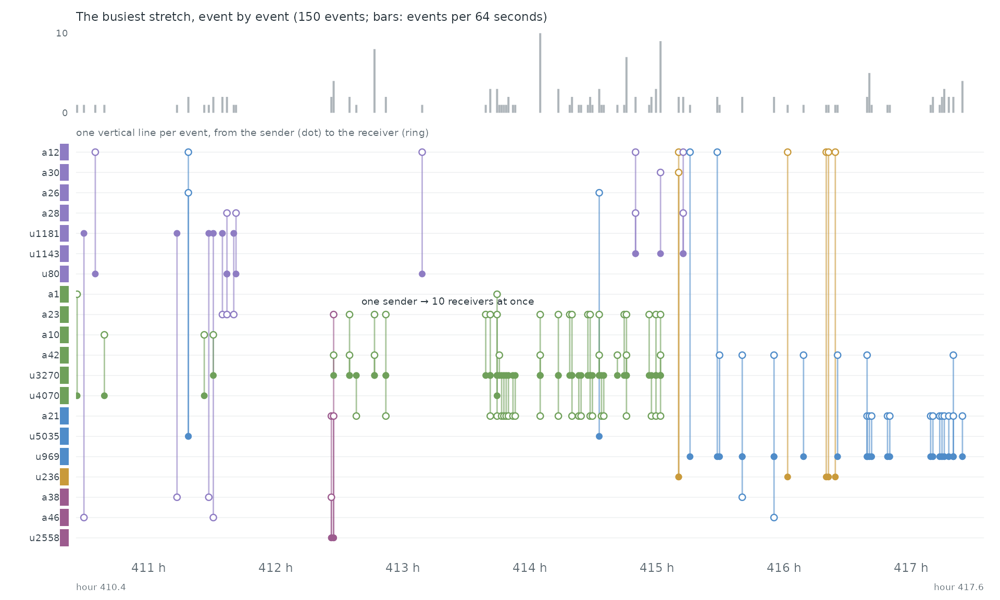
Event by event. The busiest stretch of the record, hour 410.4 to hour 417.6, event by event: each vertical line is one event between two of the actors above, from the sender (dot) to the receiver (ring).
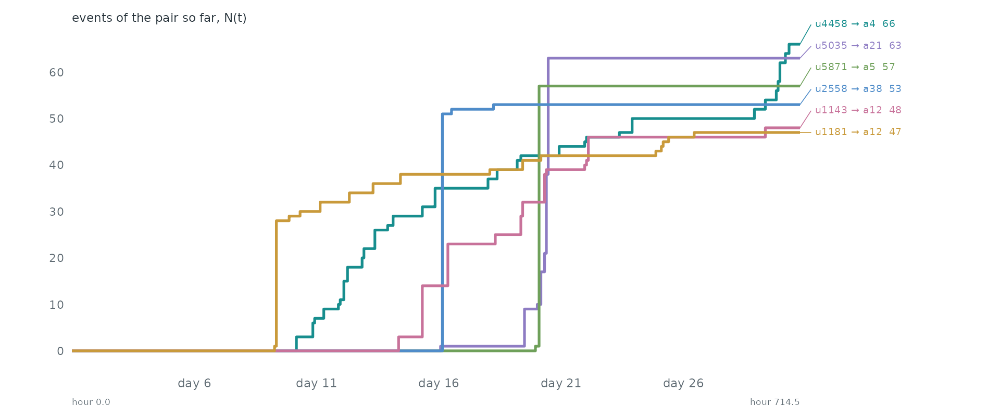
Pairs as counting processes. The counting process N(t) of the 6 busiest pairs: the number of events of the pair up to time t. Together they make 0.1% of all events. Steep stretches are bursts and flat ones silences.
Statistical profile.
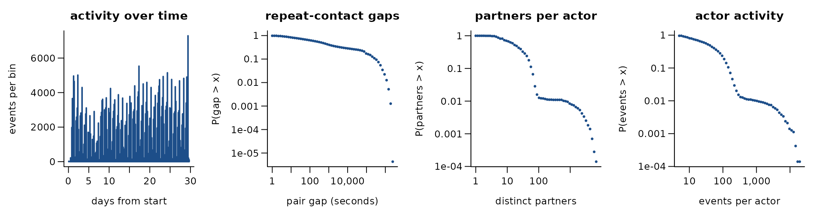
411,749 directed events among 7,144 actors over 29.8 days (178,443 distinct ordered pairs). 56.7% of events repeat an earlier ordered pair; if every event chose a pair at random the share would be 0.4%. 0.0% of events answer an earlier event in the opposite direction. The burstiness coefficient of the gaps between successive events of the same pair is 0.46 (0 for a Poisson process, positive when events cluster in bursts); the most active tenth of the actors take part in 64.6% of events (Gini 0.74). bipartite: users acting on course activities; seconds from course start
A conditional logit on the first 4,000 events (one sampled control per event) gives:
| term | estimate | s.e. |
|---|---|---|
| log(1 + sender’s past events) | 1.30 | 0.19 |
| log(1 + receiver’s past events received) | 2.13 | 0.26 |
| log(1 + past events receiver -> sender) | -9.32 | 8883.87 |
These coefficients reflect how the data are built, not behaviour: users act on course items, so reciprocity is impossible.
Get the data
download.file("https://snap.stanford.edu/data/act-mooc.tar.gz", "act-mooc.tar.gz", mode = "wb")A reader that turns these files into a
(sender, receiver, time) table is
readers[["snap-act-mooc"]] in data-raw/catalogue/readers.R.
GH Archive: one hour of public GitHub events
Source: https://www.gharchive.org/ · Licence: none stated · Status in amorem: no licence stated: not redistributed; obtain from the source.
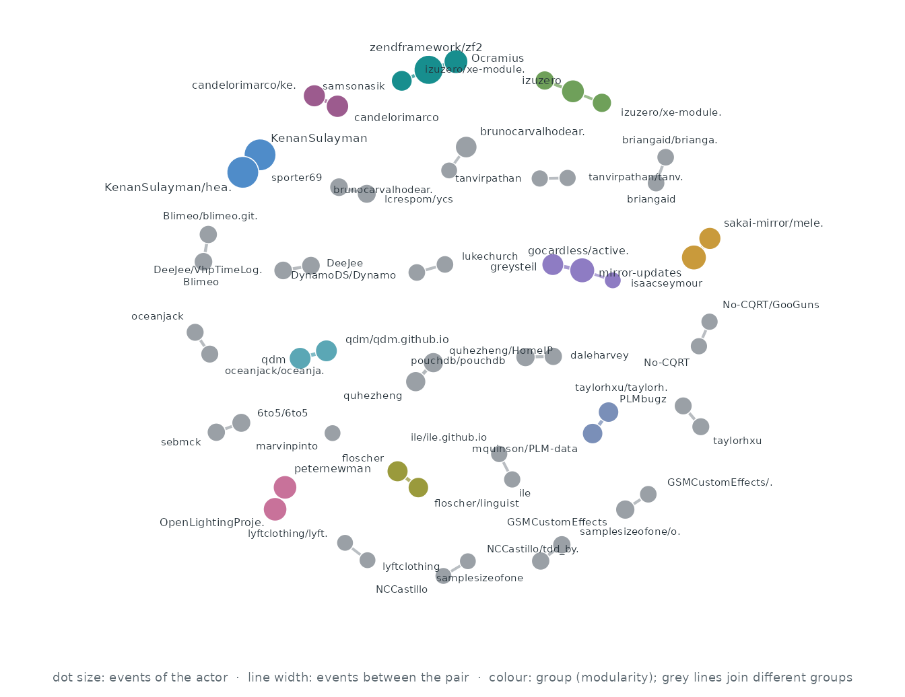
Who interacts with whom. The 60 actors of the busiest pairs, out of 11,431; events between two of them are 5.9% of all events. Each actor’s three strongest ties are drawn (31 of 31 pairs that ever interacted): wider, darker lines carry more events, larger dots are more active actors, and colours are groups found by modularity (Louvain).
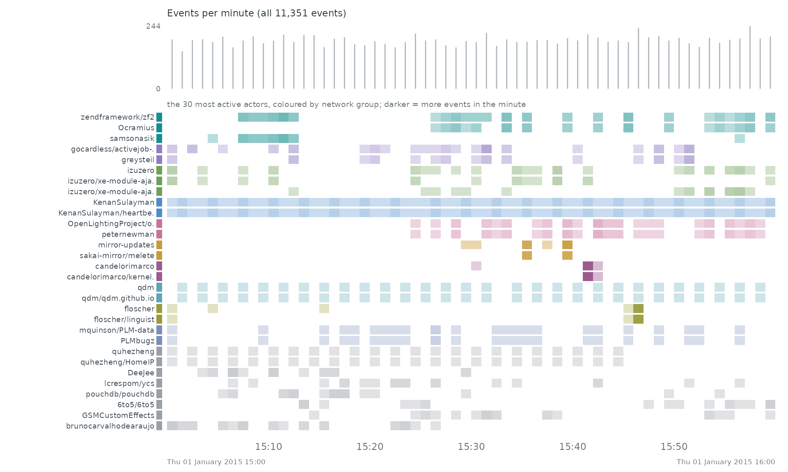
When. Each row is one of the 30 most active actors of the network, coloured by its group there; a cell is darker the more events (with anyone) the actor took part in during that stretch of time. The grey bars on top count all 11,351 events.
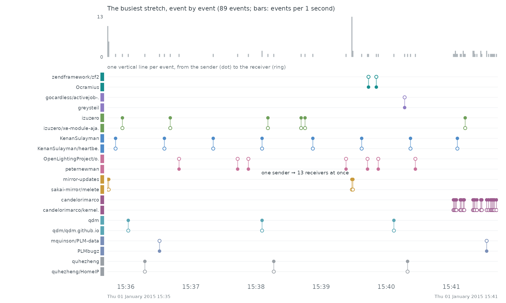
Event by event. The busiest stretch of the record, Thu 01 January 2015 15:35 to Thu 01 January 2015 15:41, event by event: each vertical line is one event between two of the actors above, from the sender (dot) to the receiver (ring).
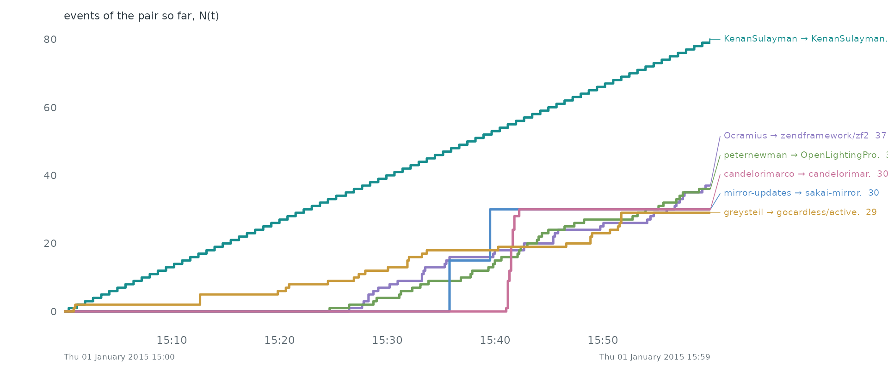
Pairs as counting processes. The counting process N(t) of the 6 busiest pairs: the number of events of the pair up to time t. Together they make 2.1% of all events. Steep stretches are bursts and flat ones silences.
Statistical profile.
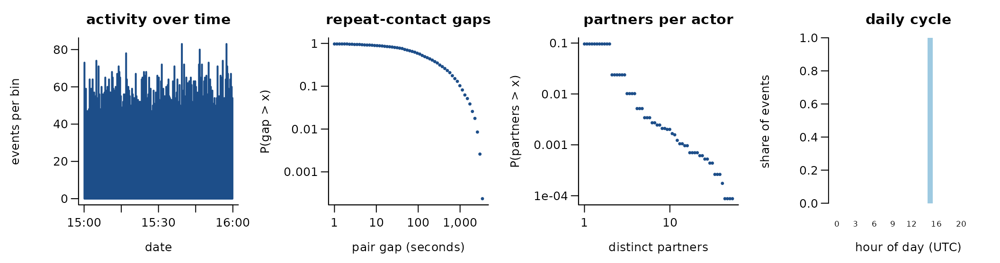
11,351 directed events among 11,431 actors over 0.0 days (6,676 distinct ordered pairs). 41.2% of events repeat an earlier ordered pair; if every event chose a pair at random the share would be 0.0%. 0.0% of events answer an earlier event in the opposite direction. The burstiness coefficient of the gaps between successive events of the same pair is 0.19 (0 for a Poisson process, positive when events cluster in bursts); the most active tenth of the actors take part in 36.8% of events (Gini 0.40). 72.4% of events share their time stamp with an earlier one. one hour of public GitHub events, user -> repository (bipartite)
A conditional logit on the first 4,000 events (one sampled control per event) gives:
| term | estimate | s.e. |
|---|---|---|
| log(1 + sender’s past events) | 0.81 | 0.05 |
| log(1 + receiver’s past events received) | 0.09 | 0.06 |
| log(1 + past events receiver -> sender) | -20.49 | 1751.03 |
These coefficients reflect how the data are built, not behaviour: users act on repositories, so reciprocity is impossible.
Get the data
download.file("https://data.gharchive.org/2015-01-01-15.json.gz", "2015-01-01-15.json.gz", mode = "wb")A reader that turns these files into a
(sender, receiver, time) table is
readers[["gharchive-sample"]] in data-raw/catalogue/readers.R.